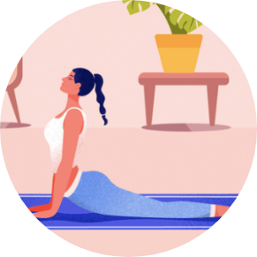

WOMEN IN FITNESS 360
Home
Activity
About your Physical Activity
On this page:
-Why do you need physical activity
-Barriers you might face in physical activity
-Tips for you to overcome barriers to exercise
-Making changes to adopt a physical activity routine
-Physical activity through incidental exercise


Why do you need physical activity
Women who do exercise regularly say they do so to:
1.Improve their physical fitness
2.Have fun
3.Manage their weight
4.Have some time just ‘for them.
1.Improve their physical fitness
2.Have fun
3.Manage their weight
4.Have some time just ‘for them.
Common exercise barriers for women include:
1.lack of time
2.lack of motivation
3.parenting demands
4.lack of energy
5.health conditions
6.lack of money
7.gender stereotyping.
1.lack of time
2.lack of motivation
3.parenting demands
4.lack of energy
5.health conditions
6.lack of money
7.gender stereotyping.
Barriers you might face in physical activity
Regular physical activity is vital for good physical and mental health. It helps improve your overall health and fitness, maintain a healthy weight, reduce your risk for many chronic diseases and promote good mental health.
Australia's Physical Activity and Sedentary Behaviour Guidelines recommend that at least 30 minutes of moderate-intensity physical activity on most, preferably all, days is required for good health. This is the same for women and men. However, only 54 per cent of Australian women meet these guidelines.
Some of the barriers to physical exercise that women face include family responsibilities, body image and perceptions of safety.
Australia's Physical Activity and Sedentary Behaviour Guidelines recommend that at least 30 minutes of moderate-intensity physical activity on most, preferably all, days is required for good health. This is the same for women and men. However, only 54 per cent of Australian women meet these guidelines.
Some of the barriers to physical exercise that women face include family responsibilities, body image and perceptions of safety.
Tips for you to overcome barriers to exercise
1.Lack of time – many women juggle child-rearing, household duties and paid work, and don't find time for themselves. Try to exercise whenever you have the chance. Three 10-minute bouts of physical activity over the day have the same health benefits as a continuous 30-minute session. Exercise DVDs are a good way to slot some physical activity into a busy day. Also building in activity with your children, such as walking to the shops or playing in the park is a great way to stay active.
1.Lack of time – many women juggle child-rearing, household duties and paid work, and don't find time for themselves. Try to exercise whenever you have the chance. Three 10-minute bouts of physical activity over the day have the same health benefits as a continuous 30-minute session. Exercise DVDs are a good way to slot some physical activity into a busy day. Also building in activity with your children, such as walking to the shops or playing in the park is a great way to stay active.
A few minor changes to your daily lifestyle can also increase your physical activity level. Suggestions include:
1.For short trips, walk instead of taking the car.
2.Play actively with your children.
3.Listen to your favourite music or the radio and dance around the house.
4.Do things yourself instead of using labour-saving machines.
5.Get the whole family active on the weekends. The range of free activities is only limited by your imagination but could include bushwalking, cycling around the neighbourhood, swimming at the beach or playing backyard cricket.
1.For short trips, walk instead of taking the car.
2.Play actively with your children.
3.Listen to your favourite music or the radio and dance around the house.
4.Do things yourself instead of using labour-saving machines.
5.Get the whole family active on the weekends. The range of free activities is only limited by your imagination but could include bushwalking, cycling around the neighbourhood, swimming at the beach or playing backyard cricket.
Physical activity through incidental exercise
